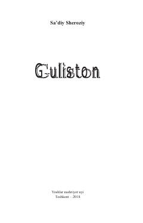

GSa’diy Sheroziyning axloqiy-falsafiy hikoyalar va hikmatlar to‘plami.
Sa’diy Sheroziyning ushbu asari fors va umumjahon adabiyotining durdonalaridan biri hisoblanadi. Asar falsafiy-didaktik ruhda yozilgan bo‘lib, unda axloqiy masalalar, insoniy fazilatlar va hayotiy haqiqatlar turli hikoyatlar orqali badiiy aks ettirilgan.